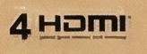
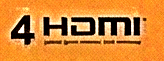

Box Logo Detection Report
1. 결론 (Executive Summary)
Feature Matching(SIFT/ORB)은 유사 로고를 구분할 수 없고, Template Matching 계열(TM/Canny)이 정확하다.
- SIFT / ORB : 11개 템플릿 전부 FOUND 판정 — 부분 특징점 공유로 인해 오답과 정답을 구분 불가
- TM (Template Matching) : 정답 4개만 FOUND, 오답 7개 모두 NOT FOUND — 가장 정확
- Canny Edge TM : 정답 4개만 FOUND, 오답 7개 모두 NOT FOUND — 오답 점수 격차가 가장 커서 가장 견고
- 색상 변화 테스트: hdmi4_color1(주황 톤 변경)도 TM(0.86)/Canny(0.42) 모두 FOUND — 색상 변화에도 검출 성공
- 단, TM/Canny 모두 템플릿 크기가 실제 검출 대상과 비슷해야 동작 (1536x1024 원본은 스케일 범위 초과로 실패)
주의: 고해상도 템플릿(1536x1024)을 단순 리사이즈하면 배경 비율(~80%)이 유지되어 Canny에서 오검출이 발생한다.
고해상도 소스는 로고 영역만 크롭하여 사용해야 한다.
2. 테스트 대상
2-1. Scene (검출 대상 이미지)

Samsung QLED 4K TV 박스 전개도. 전면 하단에 Dolby Atmos 로고와 4 HDMI 로고가 존재한다.
2-2. Templates (검출 템플릿 11개)
| # | Name | File | Size | 내용 | 정답 |
|---|---|---|---|---|---|
| 1 | dolbyAlmos | dolbyAlmos.png | 138x40 | Dolby Atmos (저해상도) | O |
| 2 | DolbyAlmos_high | DolbyAlmos_high.png | 1536x1024 | Dolby Atmos (고해상도) | O too big |
| 3 | DolbyAtmos | DolbyAtmos.png | 1536x1024 | Dolby Atmos (다른 촬영본) | O too big |
| 4 | DolbyCinema | DolbyCinema.png | 1536x1024 | Dolby Cinema (다른 제품) | X |
| 5 | hdmi2 | hdmi2.png | 1536x1024 | 2 HDMI | X |
| 6 | hdmi3 | hdmi3.png | 1536x1024 | 3 HDMI | X |
| 7 | hdmi4 | hdmi4.png | 164x61 | 4 HDMI (저해상도) | O |
| 8 | hdmi4_high | hdmi4_high.png | 1536x1024 | 4 HDMI (고해상도) | O too big |
| 9 | hdmi4_color1 | hdmi4_color1.png | 164x61 | 4 HDMI (주황 색상 변경) | O |
| 10 | hdmi4_high1 | hdmi4_high1.png | 200x60 | 4 HDMI (고해상도 리사이즈) | O |
| 11 | hdmi3_high | hdmi3_high.png | 200x71 | 3 HDMI (고해상도 리사이즈) | X |
3. 검출 방법 비교
SIFT (Scale-Invariant Feature Transform)
- 스케일/회전 불변 특징점 추출
- Lowe's ratio test + Homography RANSAC 검증
- 결과: 10/10 FOUND — 부분 특징 공유로 전부 매칭됨
ORB (Oriented FAST and Rotated BRIEF)
- 바이너리 디스크립터 기반, 속도 빠름
- 작은 템플릿용 업스케일 + CLAHE 전처리 적용
- 결과: 10/10 FOUND — SIFT와 동일한 한계
TM (Template Matching)
- 멀티스케일(0.3x~3.0x) 픽셀 비교
- TM_CCOEFF_NORMED 정규화
- 결과: 3/10 FOUND — 정답만 정확히 검출 BEST
Canny Edge TM
- Canny 엣지 변환 후 Template Matching
- 색상/톤 변화에 강함, 윤곽만 비교
- 결과: 3/10 FOUND — 오답 점수 격차 최대 ROBUST
4. 전체 검출 결과
| Template | Size | 정답 | SIFT | ORB | TM | Canny | ||||
|---|---|---|---|---|---|---|---|---|---|---|
| Match | Result | Match | Result | Score | Result | Score | Result | |||
| dolbyAlmos | 138x40 | O | 71 | FOUND | 96 | FOUND | 0.9288 | FOUND | 0.6882 | FOUND |
| DolbyAlmos_high | 1536x1024 | O* | 60 | FOUND | 475 | FOUND | 0.4329 | NOT | 0.1081 | NOT |
| DolbyAtmos | 1536x1024 | O* | 87 | FOUND | 492 | FOUND | 0.4082 | NOT | 0.0777 | NOT |
| DolbyCinema | 1536x1024 | X | 17 | FOUND | 499 | FOUND | 0.3907 | NOT | 0.1165 | NOT |
| hdmi2 | 1536x1024 | X | 34 | FOUND | 152 | FOUND | 0.4698 | NOT | 0.1747 | NOT |
| hdmi3 | 1536x1024 | X | 24 | FOUND | 217 | FOUND | 0.5002 | NOT | 0.1663 | NOT |
| hdmi3_high | 200x71 | X | 23 | FOUND | 61 | FOUND | 0.7231 | NOT | 0.3796 | NOT |
| hdmi4 | 164x61 | O | 105 | FOUND | 96 | FOUND | 0.9269 | FOUND | 0.5695 | FOUND |
| hdmi4_color1 | 164x61 | O | 63 | FOUND | 77 | FOUND | 0.8625 | FOUND | 0.4166 | FOUND |
| hdmi4_high | 1536x1024 | O* | 74 | FOUND | 613 | FOUND | 0.4618 | NOT | 0.1470 | NOT |
| hdmi4_high1 | 200x60 | O | 48 | FOUND | 65 | FOUND | 0.8579 | FOUND | 0.4138 | FOUND |
O* = 내용은 정답이지만 템플릿 크기(1536x1024)가 스케일 범위를 초과하여 TM/Canny에서 미검출.
5. 검출 결과 시각화
각 방법별로 FOUND된 로고에 컬러 바운딩 박스를 표시한 결과 이미지:

SIFT — 11/11 FOUND (전부 검출, 구분 불가)

ORB — 11/11 FOUND (전부 검출, 구분 불가)

Template Matching — 4/11 FOUND (정답만 검출)

Canny Edge TM — 4/11 FOUND (정답만 검출)
6. 고해상도 리사이즈 실험
1536x1024 템플릿을 200px 폭으로 리사이즈 후 TM/Canny 점수 변화:
| Template | 내용 | 정답 | TM (원본) | TM (200px) | Canny (원본) | Canny (200px) |
|---|---|---|---|---|---|---|
| DolbyAlmos_high | Dolby Atmos | O | 0.4329 | 0.6781 | 0.1081 | 0.5932 |
| DolbyAtmos | Dolby Atmos | O | 0.4082 | 0.6763 | 0.0777 | 0.5851 |
| DolbyCinema | Dolby Cinema | X | 0.3907 | 0.7042 | 0.1165 | 0.5788 |
| hdmi2 | 2 HDMI | X | 0.4698 | 0.7087 | 0.1747 | 0.4375 |
| hdmi3 | 3 HDMI | X | 0.5002 | 0.7399 | 0.1663 | 0.4303 |
| hdmi4_high | 4 HDMI | O | 0.4618 | 0.8458 | 0.1470 | 0.4012 |
결과: 단순 리사이즈 시 TM은 hdmi4_high만 FOUND(0.85), 나머지 오답은 0.68~0.74로 아슬아슬하게 NOT.
Canny는 전부 FOUND가 되어 오검출 발생. 배경 크래프트지의 엣지 패턴이 유사해서 0.40~0.59로 threshold(0.38)를 넘김.
고해상도 템플릿은 반드시 로고 영역만 크롭하여 사용해야 한다.
7. 각 방법의 특성 및 한계
| 특성 | SIFT | ORB | TM | Canny TM |
|---|---|---|---|---|
| 유사 로고 구분 | 불가 | 불가 | 가능 | 가능 |
| 스케일 변화 대응 | 강함 | 강함 | 멀티스케일 | 멀티스케일 |
| 회전/왜곡 대응 | 강함 | 강함 | 불가 | 불가 |
| 색상/톤 변화 대응 | 보통 | 보통 | 보통 (0.93→0.86) | 강함 (엣지 기반) |
| 큰 템플릿 대응 | 가능 | 가능 | 스케일 범위 제한 | 스케일 범위 제한 |
| 정답/오답 점수 격차 | — | — | 보통 (0.39~0.93) | 큼 (0.08~0.69) |
| 속도 | 보통 | 빠름 | 느림 (멀티스케일) | 느림 (멀티스케일) |
8. 색상 변화 실험 (hdmi4_color1)
hdmi4 원본(크래프트지 톤)과 동일한 내용이지만 주황색으로 색상을 변경한 hdmi4_color1 템플릿을 추가하여 각 방법의 색상 변화 대응력을 검증했다.

hdmi4 (원본)

hdmi4_color1 (주황)
| Template | SIFT | ORB | TM (score) | Canny (score) |
|---|---|---|---|---|
| hdmi4 (원본) | FOUND (105) | FOUND (96) | FOUND (0.9269) | FOUND (0.5695) |
| hdmi4_color1 (주황) | FOUND (63) | FOUND (77) | FOUND (0.8625) | FOUND (0.4166) |
분석
- 4개 방법 모두 FOUND — 색상 변경에도 검출 성공
- TM: 0.9269 → 0.8625 (7% 하락). TM_CCOEFF_NORMED가 평균 밝기를 정규화하므로 톤 변화를 어느 정도 흡수
- Canny: 0.5695 → 0.4166 (27% 하락). 엣지 추출은 색상 무관하지만, 주황 톤에서 대비가 약해져 엣지가 일부 손실됨. threshold(0.38) 근처라 극단적 색상 변화 시 위험
- SIFT/ORB: 매칭 수 감소(105→63, 96→77)하지만 여전히 FOUND. 특징점 기반이라 색상 영향이 적음
9. 권장 사항
실전 적용 시 권장 전략
- 1차: Canny Edge TM으로 검출 — 색상/톤 변화에 강하고, 오답 점수 격차가 가장 큼
- 보완: TM으로 교차 검증 — Canny에서 경계선 점수(0.35~0.45)인 경우 TM 점수로 재확인
- 템플릿 준비 원칙:
- 로고 영역만 크롭 (배경 최소화)
- 실제 검출 대상과 유사한 크기 (100~300px 폭 권장)
- 너무 큰 원본(1000px+)은 스케일 범위 초과로 미검출됨
- SIFT/ORB는 "로고가 어딘가에 있는지" 대략적 위치 파악 용도로만 활용 (정밀 구분 불가)
Generated by detect_logos.py — OpenCV 4.13.0 / Python 3.13